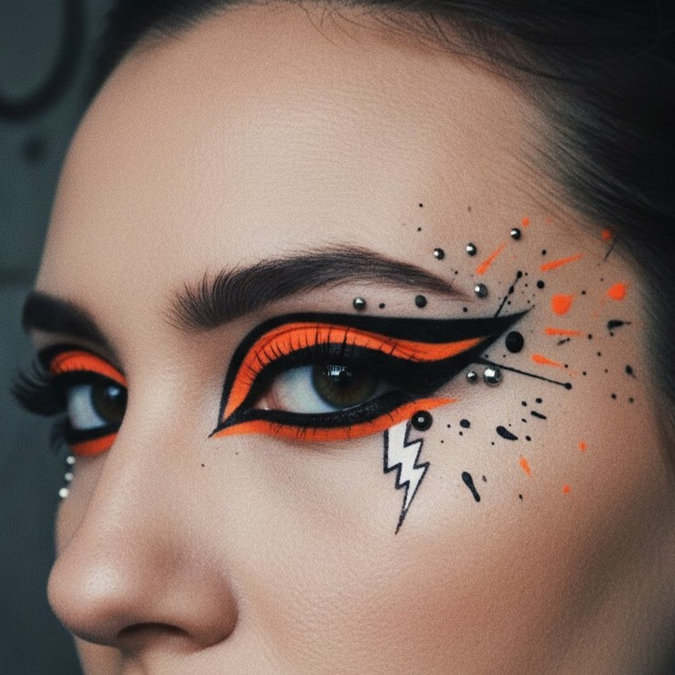
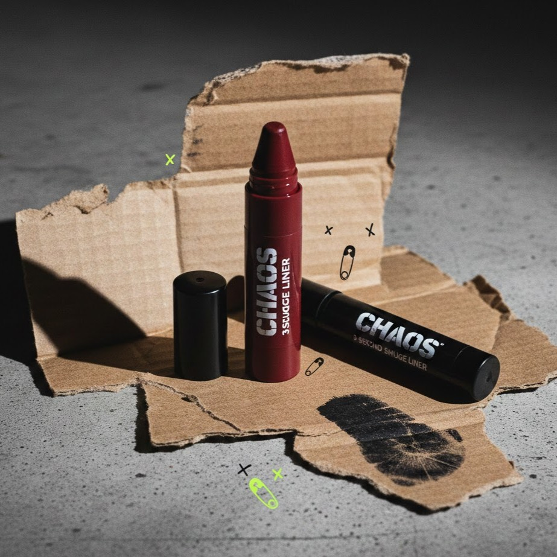

[WARNING: NOT FOR THE POLISHED]
If you’re looking for a 5:00 AM Pilates routine and a green smoothie recipe, close this tab. This isn't about being 'clean.' It’s about being real. It’s about the grit, the glitter, and the beautiful mess of actually living your life.
If you haven't heard of it, you’d probably think it’s just about regular showers and basic hygiene. If that were the case, we wouldn’t have a problem.
But it’s not. So let us tell you what this is really about: It’s how society found a new way for us to lose our personality. Kill our personal style. Judge us for actually having a life.
They’re literally lying to us. They call it “no-makeup,” but you’re still putting on 15 layers and spending 45 minutes in the mirror just to look like you did... nothing? It’s a scam.
They’ve drained the life out of everyone’s closet. Now we’re all just wearing different shades of oatmeal and "nude" until we blend into the literal walls. Where did the color go?
Since when did relaxing become a chore? I don’t have time for a "grueling" Pilates class and an hour-long shower ritual every single morning.
Apparently, just taking a shower isn't enough anymore. Now you need the oils, the powders, the double-scrubbing, and the exfoliation—otherwise, you’re not "aesthetic." It’s a full-time job just to be clean.
This is the worst part. This whole aesthetic is just a polite way of telling women to stay small. It’s about being quiet, being "neat," and not taking up too much space. It kills our need to be loud, to be expressive, and to just be human. It’s a trap that makes us feel like if we aren't "polished," we aren't enough.
They scrubbed away everything that made us interesting. The grit, the glitter, the weird style—it’s all gone, replaced by this boring, polished version of "perfection" that has zero personality.
They tried to shame us for the things we actually enjoy: Wearing real makeup. Experimenting with styles. Blasting loud music in the bathroom while painting sharp-as-a-knife eyeliner. Coming out of that bathroom feeling amazing, creative, and alive.

Please. Don't insult us. We know we deserve better than backhanded compliments from people who are afraid of color.

If you’re ready to stop performing and start living, you only need one thing. No "glass skin" promises, no beige packaging—just the one tool that lets you take up space.
This is the pencil they warned you about. It’s a chunky, deep-black kohl that refuses to be "subtle." It’s designed for the girls who blast music in the bathroom and paint those sharp-as-a-knife lines just because they can.
Draw it rough. Smudge it with your pinky. Get out the door. It doesn't care if your pores are visible or if your bun is messy. It’s the "I have a life" liner. It stays on through the pizza, the late nights, and the chaos. Because you’re young, and you have better things to do than blend your concealer for 45 minutes.
[GRAB THE LINER]